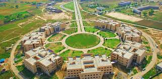

| Home | NUST | UET | PU | FAST |
The town of Gujrat is of modern origin, but it occupies the site of an ancient city the foundation of which is attributed to Raja Bachan Pal, a Surajbansi Rajput, who emigrated from the lower Gangetic Doab. The ancient name of the city was Udanagri (the everlasting or sweet-smelling city).
According to General Cunningham and Captain H Mackenzie, the construction of present walled city of Gujrat on the ruins of Udanagri is attributed to Ali Khan, a Gujjar, whose name is strangely like that of Alahana, the Raja of Gujara, who was defeated by Sangkara Varmma between AD 883 and AD 901. Captain Mackenzie is of the view that the city was rebuilt by Rani Gujran, the wife of Badr Sen, who was the son of Raja Rasalu of Sialkot. Gujrat was again restored as a market and simultaneously as a military base in the reign of Mughal king Akbar the Great. During the British rule, Gujrat was made the district headquarters (in those days it also included the present district of Mandi Bahauddin).
The educational history of Gujrat is marvellous. The Zamindar Educational Association established a high school in 1921 and Zamindar College in 1937. The college attracted the students from the districts of Attock, Jhelum, Mianwali and Sargodha, as well as Azad Jammu and Kashmir (AJK). For this reason, Gujrat was declared as the Khita-e-Yunan (part of Greece) of Punjab.

In 2003, the Punjab government, led by then-Chief Minister Chaudhry Pervez Elahi, established UOG on the vacant land adjoining the shrine of saint Hafiz Muhamad Hayat, who lived in the Mughal period.